Miscellaneous cartopy utilities
always_circular_stereo example
Enter search terms or a module, class or function name.
Tags:
Lines and polygons
Scalar data
Vector data
Web services
Miscellanea
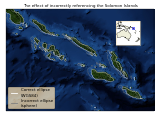
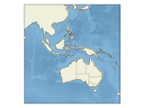
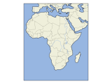
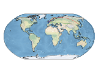
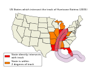
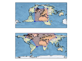
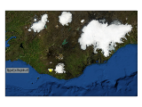
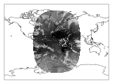
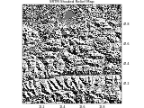
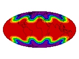
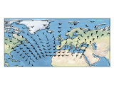
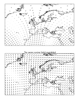
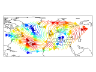
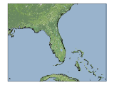
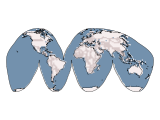
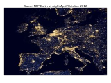
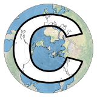
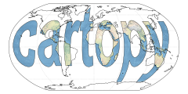
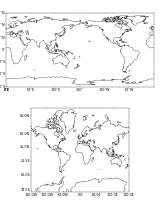
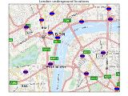